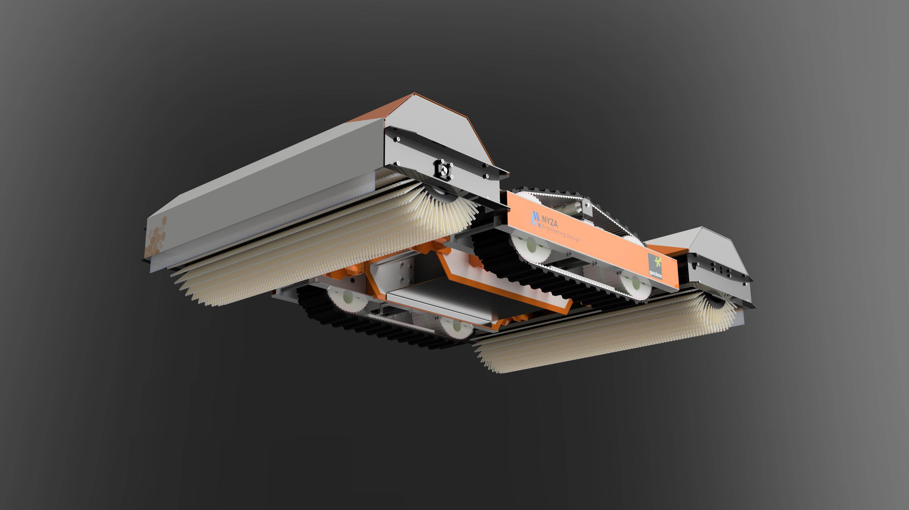
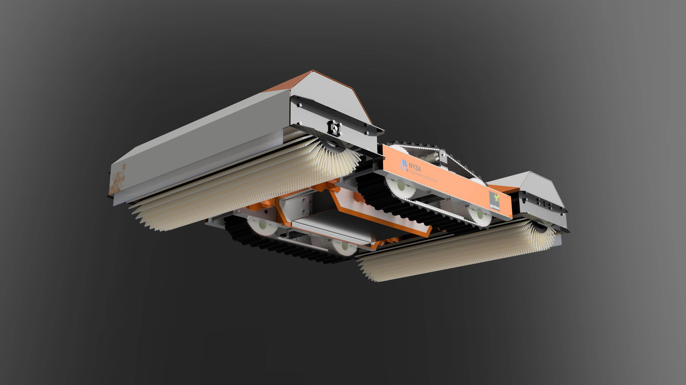
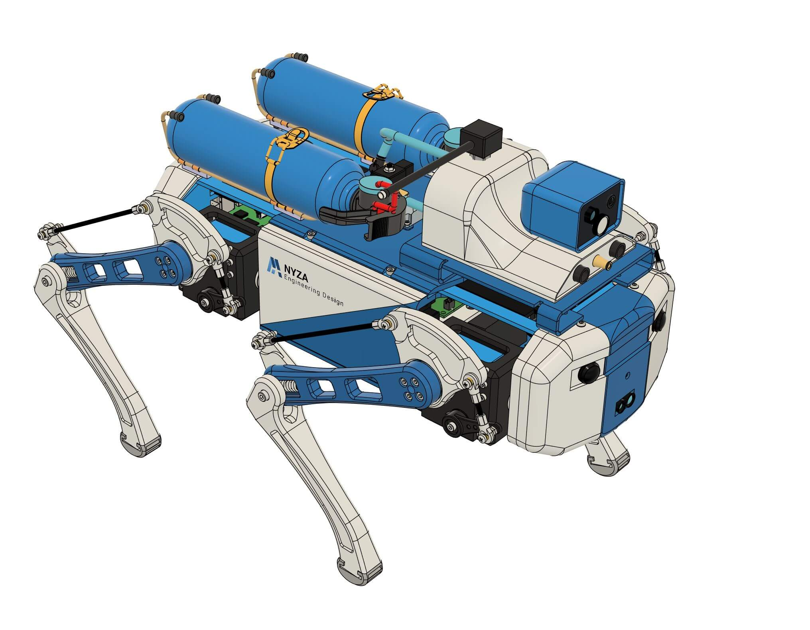
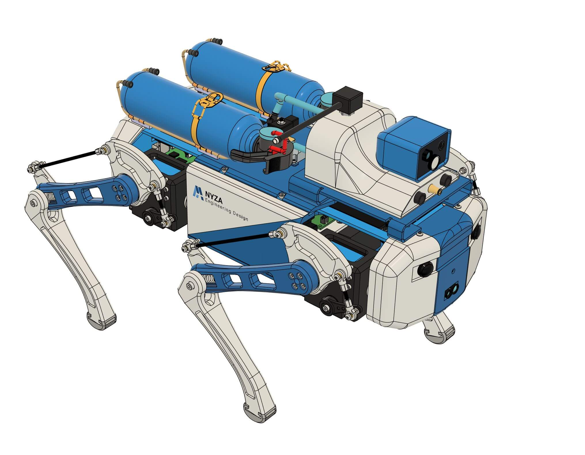

Our Work
Explore Our Projects
We're proud of the robots we've designed and built. Each one is a testament to our passion for engineering and innovation.
wheel Tank Robot
We designed and implemented a fully autonomous robot for sorting and transporting packages in a large-scale warehouse.


Blue Sky Robotic
A compact and precise robotic arm for assisting surgeons in delicate procedures, with a focus on sterile environments.
Surveillance Robot
A smart, self-flying drone capable of navigating complex urban environments to deliver packages safely and efficiently.
.png)
.jpg)

Mini PV Robot v2
An autonomous robot designed for monitoring crop health, precision planting, and targeted pesticide application.


Stephen Project
A rugged, remote-operated underwater vehicle for deep-sea exploration, equipped with high-resolution cameras and manipulators.
 


Compact PV Cleaning Robot
Develop a solar panel cleaning robot that is lightweight, modular, and easy to deploy. The robot should be divided into five modules, each weighing only 10kg, for convenient transportation and maintenance.

.png) 

Fire E Pup Robot Dog
Design a quadruped robot capable of navigating tight spaces and extinguishing fires remotely. Fire E Pup should be maneuverable and equipped with a heat-resistant water cannon system and CO2 Extinguishers.
Solar Panel Cleaning Robot
Designed a mobile robot with all the requirements given by the client and made a lot of modifications based on my experience with robots. All custom parts were built with design for manufacturing considerations.


Robotic cell layout
This project proposes an automated assembly solution using a SCARA robot and several feeders within the robot’s reach to assemble a flashlight efficiently.
.png)


Egg-grading system
The Automated Egg-grading and palletizing system. This automated system uses pneumatic cylinders and suction cups for gentle, precise pick-and-place operation.


4DOF Robotic Arm
Developed a research prototype for a robotic arm featuring dual grippers. The innovative design integrates an extra gripper on an intermediate link, enabling improving cycle time.


Autonomous Forklift
This project outlines the design and development of a semi-autonomous forklift for precise orientation and stacking of Euro pallets. The system is utilized to automate pallet handling tasks, improving efficiency and reducing potential damage.
Ready to build your next robot?
Whether you're an inventor, a startup, or a hardware team, we have the expertise to bring your ideas to life. Let's start the conversation today.
HIRE US